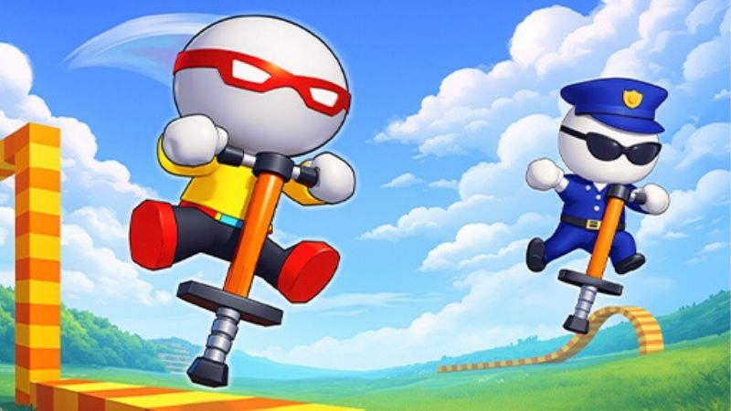

Arcade
Pogo Masters
Pogo Masters, tek zıplayan çubuğunuzu ustalıkla kontrol ederek engelleri aşmaya çalıştığınız eğlenceli ve beceri odaklı bir platform oyunudur. Dengenizi koruyun, doğru zamanda zıplayın ve en yüksek puanı elde etmek için reflekslerinizi kullanın. Mobil ve bilgisayarda ücretsiz oynanabilir.
🎮 Hemen Oyna